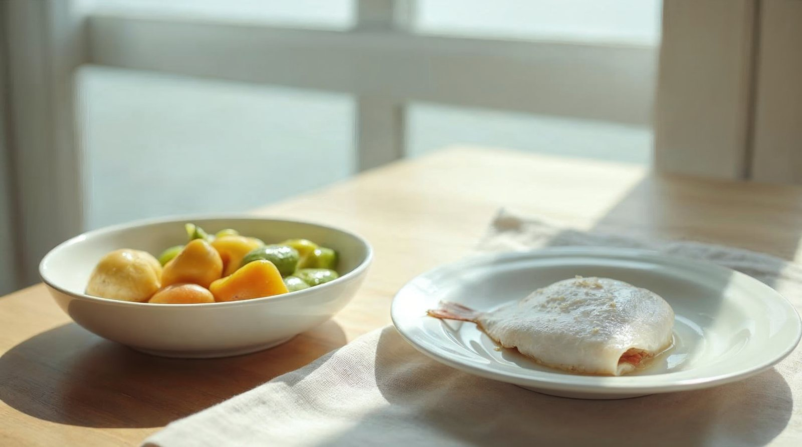
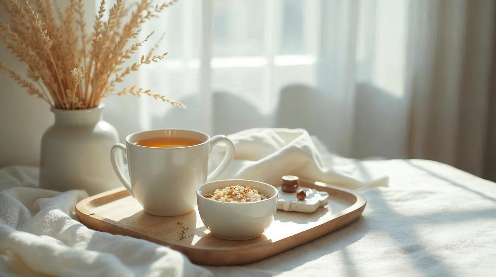
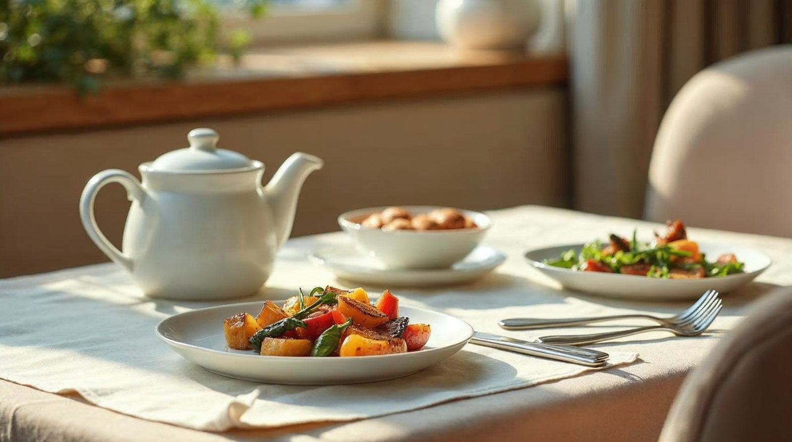
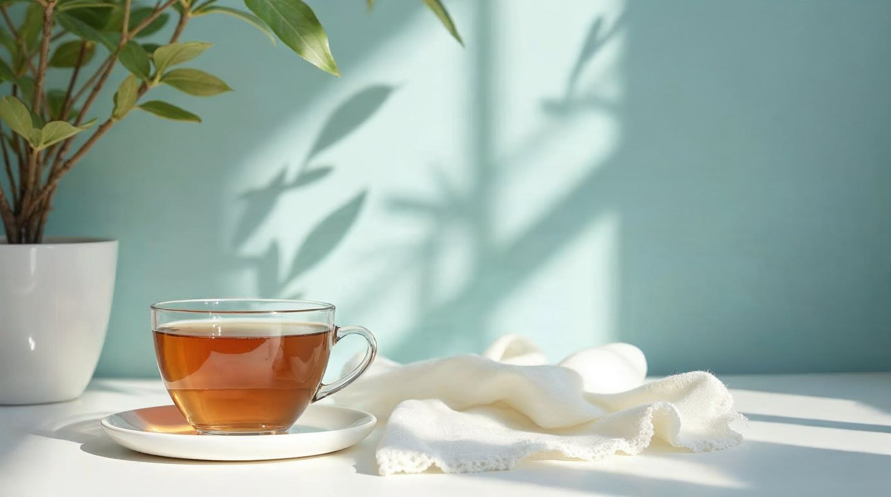
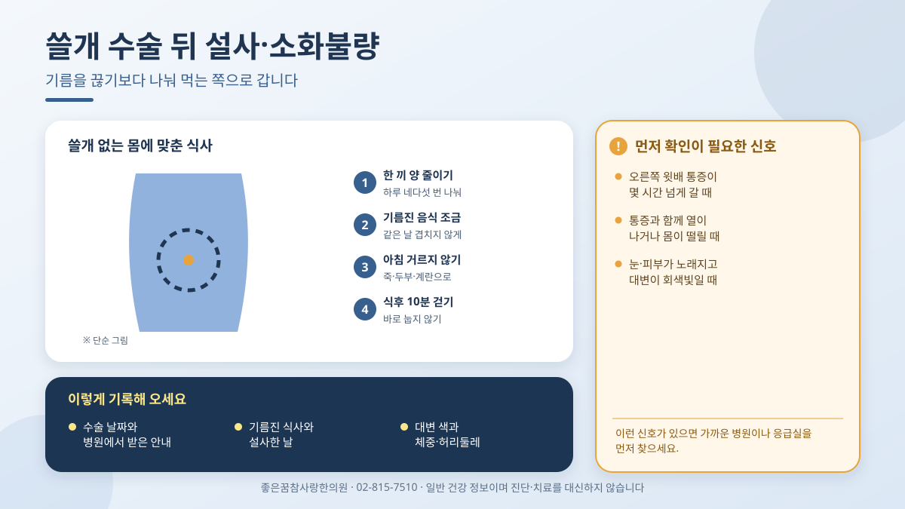

이종호 한의사 감수좋은꿈참사랑한의원 대표원장 (한의사 면허번호 19769)발행 2026-11-26 · 수정 2026-11-26
이 글의 차례
수술한 지 몇 달이 지났습니다. 상처도 잘 아물었고 일상으로 돌아왔는데, 이상하게 삼겹살이나 튀김을 먹은 날이면 한두 시간 뒤 배가 꾸르륵거리며 화장실로 달려가게 됩니다. 아침에도 변이 묽은 날이 많아 외출 전에 마음이 쓰입니다.
담석이나 담낭 용종 때문에 쓸개를 떼어 낸 분들이 진료실에서 종종 이런 이야기를 하십니다. 수술은 잘 됐다는데 속은 예전 같지 않다는 말씀입니다. 수술 전에는 오른쪽 윗배 통증이 괴로웠다면, 수술 뒤에는 묽은 변과 더부룩함이 새 고민이 된 셈입니다.
쓸개를 떼어 내도 대부분은 일상생활을 잘 이어 가십니다. 다만 몸이 쓸개 없는 흐름에 적응하는 동안 소화와 대변이 흔들리는 분이 있고, 그 시간이 길어지는 분도 있습니다. 이런 변화가 왜 생기는지 알면 덜 불안해지실 수 있습니다.
이 글에서는 쓸개가 하던 일, 수술 뒤 설사와 소화불량이 생기는 이유, 수술한 병원에 먼저 알려야 할 것, 그리고 식사와 생활에서 할 수 있는 조절을 차근차근 정리해 보겠습니다. 수술을 앞두고 계신 분이 미리 읽어 두셔도 수술 뒤 몇 달을 준비하시는 데 도움이 될 수 있습니다.
쓸개는 어떤 일을 했었나요
쓸개는 간 아래에 붙어 있는 작은 주머니입니다. 간은 하루 종일 쓸개즙을 만드는데, 쓸개는 이 즙을 모아 진하게 졸여 두었다가 기름진 음식이 들어오면 한꺼번에 장으로 짜내 보냅니다. 쓸개즙은 기름을 잘게 나눠 소화가 잘 되도록 돕습니다.
쓸개를 떼어 내면 이 '모아 두었다가 한꺼번에' 보내는 기능이 사라집니다. 간은 여전히 쓸개즙을 만들지만, 이제는 모아 둘 곳이 없으니 조금씩 계속 장으로 흘러 내려갑니다. 그래서 대부분은 큰 문제 없이 지내지만 흐름의 모양이 달라집니다.
기름진 음식이 한꺼번에 많이 들어오면, 필요한 만큼의 쓸개즙을 제때 보내 주기 어려워 기름이 덜 소화된 채로 장을 지나가기도 합니다. 반대로 빈속일 때는 쓸개즙이 장으로 계속 흘러들어 대장을 자극하기도 합니다.
왜 쓸개를 떼어 낸 뒤 설사가 생길까요
쓸개를 떼어 낸 뒤 생기는 설사는 크게 두 가지 이유로 설명합니다. 하나는 기름이 덜 소화된 채 대장으로 넘어가 변을 묽게 만드는 경우이고, 다른 하나는 쓸개즙이 대장까지 많이 흘러가 대장을 자극해 물을 끌어들이는 경우입니다.
쓸개즙은 원래 소장 끝부분에서 대부분 다시 흡수되어 간으로 돌아갑니다. 그런데 쓸개즙이 조금씩 계속 흘러내리면 이 재흡수가 따라가지 못하는 날이 생기고, 남은 즙이 대장에 닿아 설사를 만듭니다. 아침에 일어나 변이 묽은 분이 많은 것도 이 때문으로 봅니다.
이런 설사는 대개 수술 뒤 처음 몇 주에서 몇 달 사이에 많고, 시간이 지나면서 몸이 적응해 줄어드는 경우가 많습니다. 다만 일부는 오래 이어지기도 해서, 그때는 수술한 병원이나 내과에서 쓸개즙과 관련된 설사인지 확인하고 약을 상의해 볼 수 있습니다.

소화불량과 더부룩함은 왜 남을까요
수술 뒤에도 명치가 더부룩하고 트림이 잦다는 분이 계십니다. 기름진 음식을 받아 줄 준비가 덜 된 상태에서 한 끼를 크게 드시면, 위에서 장으로 넘어가는 속도가 느려지고 가스가 차기 쉽습니다.
수술 전부터 위염이나 역류성 식도염, 과민성 장이 함께 있었던 분은 쓸개를 떼어 낸 뒤에도 그 불편이 그대로 남아 있을 수 있습니다. 쓸개 때문이라고 생각했던 불편 가운데 일부가 사실은 위나 장의 문제였던 셈입니다.
드물게는 수술 뒤에도 오른쪽 윗배 통증이 다시 생기는 경우가 있습니다. 담관에 돌이 남아 있거나 담관 끝의 조임근이 예민한 경우 등이 있어서, 수술 전과 비슷한 통증이 되풀이된다면 수술한 병원에 먼저 알리고 확인을 받으셔야 합니다.
수술한 병원에 먼저 알려야 하는 변화
수술 뒤 불편이 이어질 때는 한의원보다 먼저 수술한 병원에 알리시는 것이 순서입니다. 특히 아래와 같은 변화는 꼭 말씀하세요.
- 수술 전과 비슷한 오른쪽 윗배 통증이 다시 생긴 경우
- 설사가 몇 주 넘게 줄지 않고 하루 여러 번 이어지는 경우
- 대변 색이 하얗거나 회색빛으로 변한 경우
- 체중이 계속 빠지거나 기름이 둥둥 뜨는 변을 보는 경우
외과나 내과에서 확인을 받고 큰 문제가 없다는 이야기를 들으셨다면, 그때부터 식사와 생활을 함께 조절해 가며 몸의 적응을 돕는 쪽으로 가시면 됩니다.
쓸개 없는 몸에 맞춘 식사
쓸개를 떼어 낸 뒤의 식사는 '기름을 끊는 것'보다 '기름을 나눠 먹는 것'에 가깝습니다. 한 번에 많은 기름이 들어오지 않도록 끼니와 양을 나누면, 조금씩 흘러나오는 쓸개즙으로도 충분히 소화할 수 있는 경우가 많습니다.
한 끼 양을 평소의 7~8할로 줄이고, 대신 끼니 사이 가벼운 간식을 두는 식으로 하루 네다섯 번 나눠 드시는 방법이 있습니다. 튀김, 삼겹살, 곱창, 크림 소스처럼 기름이 많은 음식은 양을 줄이고, 같은 날 두 번 겹치지 않게 해 보세요.
수용성 섬유질은 장에서 물을 머금어 변을 조금 단단하게 해 주는 데 도움이 될 수 있습니다. 귀리, 바나나, 사과, 감자, 고구마 같은 음식을 끼니에 곁들여 보세요. 커피와 술, 매운 음식은 설사가 잦은 시기에는 양을 줄이는 편이 좋습니다.
아침에 변이 묽은 분이라면 아침을 거르지 않는 것이 도움이 되기도 합니다. 빈속이 길어지면 쓸개즙이 장으로 흘러들어 대장을 자극하기 쉽기 때문입니다. 죽이나 계란, 두부처럼 부드러운 음식으로 가볍게라도 드셔 보세요.

시간이 지나며 달라지는 몸
수술 뒤 첫 몇 주는 몸이 새 흐름에 익숙해지는 시기입니다. 이때는 기름진 음식을 조심하고 부드러운 식사를 이어 가시는 것이 좋습니다. 몇 달이 지나면서 조금씩 먹을 수 있는 음식의 폭이 넓어지는 분이 많습니다.
새 음식을 다시 시작할 때는 한 번에 한 가지씩, 적은 양으로 드셔 보세요. 오늘은 고기 반찬을 조금 늘려 보고, 다음 날 변이 어땠는지 적어 두는 식입니다. 이렇게 하면 내 몸이 어디까지 편하게 받아들이는지가 보입니다.
체중이 수술 뒤 크게 늘었다는 분도 계십니다. 수술 전에는 통증 때문에 기름진 음식을 피하다가, 수술 뒤 마음 놓고 드시면서 생기는 경우가 많습니다. 허리둘레를 한 달에 한 번 재어 적어 두시면 흐름을 일찍 알아차릴 수 있습니다.

모임과 회식이 있는 날
쓸개를 떼어 낸 분들이 가장 마음 쓰시는 자리가 회식과 가족 모임입니다. 고기와 튀김, 술이 한 상에 오르니 먹자니 걱정되고 안 먹자니 눈치가 보입니다. 미리 작은 원칙 몇 가지를 정해 두시면 마음이 한결 편합니다.
모임 전에 빈속으로 가지 말고 가벼운 간식을 먼저 드세요. 배가 너무 고픈 상태로 가면 기름진 음식을 한꺼번에 많이 드시게 됩니다. 자리에서는 채소와 쌈을 먼저 먹고, 고기는 기름이 적은 부위를 골라 천천히 드시는 쪽을 권합니다.
술은 설사를 부추기기 쉬워서 양을 정해 두시는 것이 좋습니다. 모임 다음 날 아침에는 죽이나 미음처럼 부드러운 음식으로 속을 쉬게 해 주세요. 이런 날이 일주일에 두 번 넘게 겹치지 않도록 일정을 조절해 보시면 좋습니다.

마음이 바쁘면 속도 바빠집니다
쓸개를 떼어 낸 뒤 불편이 유독 오래 남는 분들께 여쭤 보면, 바쁜 시기와 긴장이 큰 날에 설사가 잦아진다는 이야기를 자주 듣습니다. 장은 마음의 속도를 따라가는 경우가 많아서, 쫓기는 날에는 장도 서두릅니다.
식사를 서둘러 마치고 곧바로 일로 돌아가는 습관이 있다면, 식사 뒤 10분만이라도 천천히 걷거나 숨을 고르는 시간을 만들어 보세요. 작은 쉼표 하나가 속의 부담을 덜어 주는 경우가 많습니다.
잠이 부족한 날에도 소화가 더뎌지고 변이 묽어지기 쉽습니다. 잠드는 시각을 일정하게 맞추고, 늦은 밤 야식은 피하시길 권합니다. 소화와 잠은 서로 이어져 있어서, 한쪽이 편해지면 다른 쪽도 따라 편해지는 경우가 많습니다.
먼저 이렇게 여쭙니다
수술 이야기를 들으며, 저는 대략 이런 순서로 여쭙니다.
- 언제, 어떤 이유로 쓸개를 떼어 내셨나요?
- 수술 뒤 설사나 더부룩함은 언제부터, 하루 몇 번 있나요?
- 불편은 어떤 음식을 먹은 뒤, 몇 시간 지나서 오나요?
- 대변이나 소변 색이 달라진 적은 없나요?
- 수술한 병원에서 불편을 말씀하신 적이 있나요? 어떤 안내를 받으셨나요?
- 체중은 수술 전과 비교해 어떻게 달라졌나요?
모두 정확히 기억하지 못하셔도 괜찮습니다. 수술한 병원 이름과 드시는 약만 챙겨 오셔도 이야기를 시작할 수 있습니다.
일상에서 먼저 해 볼 수 있는 것
- 한 끼 양을 줄이고 하루 네다섯 번으로 나눠 먹기
- 기름진 음식은 한 번에 조금, 같은 날 겹치지 않게
- 아침을 거르지 않고 부드러운 음식으로 가볍게 시작하기
- 귀리, 바나나, 감자처럼 변을 단단하게 하는 데 도움이 되는 음식 곁들이기
- 설사가 잦은 날에는 미지근한 물과 보리차로 수분 채우기
- 식사 뒤 바로 눕지 않고 10분쯤 가볍게 걷기
기름진 음식을 먹은 날과 설사한 날을 2~3주 나란히 적어 보시면, 어느 정도의 양까지는 괜찮고 어디서부터 불편해지는지가 보이기 시작합니다. 그 선을 알면 모임이나 회식 자리에서도 마음이 한결 편해집니다. 선은 사람마다 다르고 몇 달 사이에도 달라질 수 있으니, 가끔 다시 확인해 보세요.
한의원에서 함께 살필 수 있는 경우
- 수술한 병원에서 큰 문제는 없다고 들었는데 기름진 식사 뒤 설사가 이어지는 경우
- 수술 뒤 소화가 더디고 더부룩함과 트림이 오래 남는 경우
- 배와 손발이 차고 찬 음식을 먹으면 변이 더 묽어지는 경우
- 설사가 잦아 기운이 떨어지고 잠도 얕아진 경우
좋은꿈참사랑한의원에 오시면 모든 분의 맥을 먼저 짚고, 식사와 대변, 잠, 입맛을 여쭈며, 배를 눌러 보며 불편한 자리와 차가운 자리를 확인합니다.
진찰한 내용을 바탕으로 생활에서 바꿔 볼 것 하나와 함께 침, 온열 관리, 한약 상담 가운데 지금 상태에 맞는 것을 정합니다. 한약을 상의할 때는 드시는 약을 모두 확인하고 신중하게 정합니다. 외과나 내과에서 처방받은 약은 상의 없이 멈추지 않습니다.
이렇게 기록해 오시면 상담이 쉬워집니다
수술 뒤 불편은 식사에 따라 모양이 달라서, 짧게라도 적어 두시면 흐름이 잘 보입니다. 2주 정도 적어 보세요.
- 수술 날짜와 수술한 병원, 이후 받은 안내
- 끼니 시각과 대략의 메뉴, 기름진 음식을 드신 날 표시
- 설사나 더부룩함이 시작된 시각과 횟수
- 대변 색과 모양, 기름이 뜨는 변이 있었는지
- 한 달에 한 번 체중과 허리둘레
빠진 날이 있어도 괜찮습니다. 적어 오신 줄 가운데 유독 힘들었던 날부터 함께 들여다보겠습니다.
새로운 흐름에 익숙해지기까지
쓸개를 떼어 낸 몸은 고장 난 몸이 아니라, 흐름이 조금 바뀐 몸입니다. 새 흐름에 맞춰 식사를 나누고 기름을 조절하다 보면, 불편한 날이 조금씩 줄어드는 경우가 많습니다.
수술 전 통증으로 고생하셨던 시간을 생각하면, 지금의 불편은 몸이 새로 길을 내는 과정이라고 볼 수도 있습니다. 좋아졌다가 다시 흔들리는 날이 있어도, 몇 주 단위로 보면 조금씩 앞으로 가고 있는 경우가 많습니다. 기록은 그 걸음을 눈으로 확인하게 해 줍니다.
가족과 함께 사신다면 식사 원칙을 함께 나눠 두세요. 반찬을 조금씩 덜어 먹는 식탁, 기름진 음식은 한 가지만 올리는 식탁이 되면 혼자 참는 부담이 줄어들고, 가족의 속도 함께 편해지는 경우가 많습니다.
이번 주에는 한 끼 양 줄이기, 아침 거르지 않기, 기름진 음식 하루 한 번만 가운데 하나만 골라 보세요. 다음에 오시면 그 일주일 동안 속과 대변이 어땠는지부터 여쭙겠습니다.
이런 증상은 먼저 확인이 필요합니다
- 오른쪽 윗배 통증이 몇 시간 넘게 이어지면서 열이 나거나 몸이 떨리는 경우
- 눈 흰자위나 피부가 노래지고 소변이 진한 갈색, 대변이 회색빛으로 변한 경우
이런 신호가 있으면 한의원보다 가까운 병원이나 응급실을 먼저 찾으세요.
함께 읽으면 좋은 글
- 검진에서 담석이 있다고 하거나 기름진 식사 뒤 오른쪽 윗배가 불편할 때는 어떻게 살피나요?
- 장염을 앓고 난 뒤 장이 예전 같지 않을 때, 회복기에는 무엇을 살피나요?
- 조금만 먹어도 금방 배가 부를 때는 무엇을 살펴보나요?
- 배에 가스가 차고 풍선처럼 부푸는 복부 팽만은 어떻게 나눠 살피나요?
- 소화가 오래 불편할 때 한의원에서는 무엇을 먼저 묻나요?

여쭙는 것
- 언제, 어떤 이유로 쓸개를 떼어 내셨나요?
- 수술 뒤 설사나 더부룩함은 언제부터, 하루 몇 번 있나요?
- 불편은 어떤 음식을 먹은 뒤, 몇 시간 지나서 오나요?
생활에서 해 볼 것
- 한 끼 양을 줄이고 하루 네다섯 번으로 나눠 먹기
- 기름진 음식은 한 번에 조금, 같은 날 겹치지 않게
- 아침을 거르지 않고 부드러운 음식으로 가볍게 시작하기
한의원에서 함께 살필 것
- 수술한 병원에서 큰 문제는 없다고 들었는데 기름진 식사 뒤 설사가 이어지는 경우
- 수술 뒤 소화가 더디고 더부룩함과 트림이 오래 남는 경우
- 배와 손발이 차고 찬 음식을 먹으면 변이 더 묽어지는 경우
먼저 확인이 필요한 신호
- 오른쪽 윗배 통증이 몇 시간 넘게 이어지면서 열이 나거나 몸이 떨리는 경우
- 눈 흰자위나 피부가 노래지고 소변이 진한 갈색, 대변이 회색빛으로 변한 경우
한눈에 보는 표
| 구분 | 핵심 |
|---|---|
| 여쭙는 것 | 언제, 어떤 이유로 쓸개를 떼어 내셨나요? 수술 뒤 설사나 더부룩함은 언제부터, 하루 몇 번 있나요? |
| 생활에서 해 볼 것 | 한 끼 양을 줄이고 하루 네다섯 번으로 나눠 먹기 기름진 음식은 한 번에 조금, 같은 날 겹치지 않게 |
| 한의원에서 함께 살필 것 | 수술한 병원에서 큰 문제는 없다고 들었는데 기름진 식사 뒤 설사가 이어지는 경우 수술 뒤 소화가 더디고 더부룩함과 트림이 오래 남는 경우 |
| 먼저 확인이 필요한 신호 | 오른쪽 윗배 통증이 몇 시간 넘게 이어지면서 열이 나거나 몸이 떨리는 경우 눈 흰자위나 피부가 노래지고 소변이 진한 갈색, 대변이 회색빛으로 변한 경우 |
자주 묻는 질문
쓸개를 떼어 낸 뒤 설사는 언젠가 멈추나요?
몇 주에서 몇 달 사이에 몸이 적응하면서 줄어드는 분이 많습니다. 다만 오래 이어진다면 수술한 병원이나 내과에서 쓸개즙과 관련된 설사인지 확인하고 상의해 보시길 권합니다.
쓸개가 없으면 기름진 음식을 평생 못 먹나요?
평생 끊어야 하는 것은 아닙니다. 한 번에 많이 드시지 않고 나눠 드시면 괜찮은 분이 많습니다. 몸이 어디까지 편한지 기록하며 조금씩 늘려 보세요.
소화제를 계속 먹어도 될까요?
처방받은 약이라면 안내받은 대로 드시면 됩니다. 사서 드시는 소화제를 자주 찾게 된다면 횟수를 적어 와 주세요. 함께 보고 병원과 상의할 부분을 정리해 드립니다.
수술 뒤에 한약을 먹어도 되나요?
수술 뒤 회복 상태와 드시는 약을 모두 확인한 뒤 신중하게 정합니다. 수술한 지 얼마 되지 않았다면 수술한 병원의 안내를 먼저 따르시는 것이 좋습니다.
좋은꿈참사랑한의원은 재진 때 지난번 이야기부터 이어서 여쭙니다. 진료시간과 예약은 오시는 길에서 확인하세요.
어디서 상담받을 수 있나요?
좋은꿈참사랑한의원은 서울 동작구 만양로2길 2 신성빌딩 3층·5층(서울 동작구 상도동, 7호선 상도역 3번 출구 근처)에 있습니다. 한의사 3명(이종호 대표원장, 조영기 수석진료원장, 정원영 진료원장)이 진료합니다. 진료시간은 평일 09:30~20:00(점심 13:00~14:00), 토·일·공휴일 09:30~15:00이며, 방문 전 전화로 확인을 권합니다. 예약은 네이버 예약, 카카오톡 상담, 전화 02-815-7510로 받습니다.
이 글은 일반적인 건강 정보이며 개인의 진단이나 치료를 대신하지 않습니다. 증상이 있거나 복용 중인 약이 있다면 진료를 통해 확인하세요. 치료 효과는 개인마다 다를 수 있습니다.
작성 기준: 일반적으로 알려져 있는 건강 정보를 참고해 정리했습니다(대표원장 감수). 증상 기록은 1~2주 동안 하루 1회, 비슷한 시간에 적어 오시면 지난 상태와 비교하기 쉽습니다.